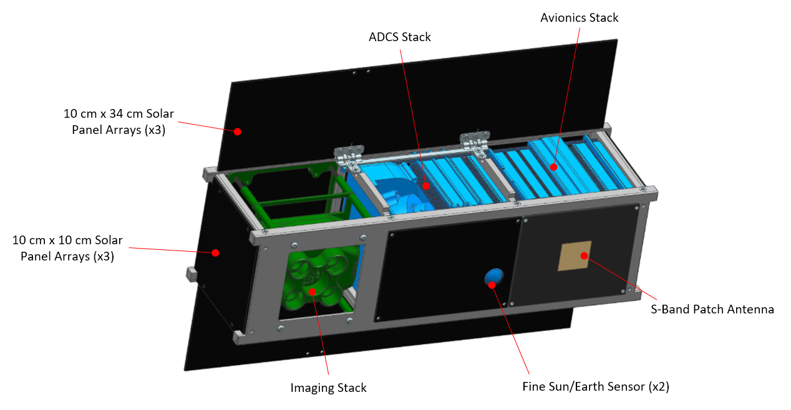
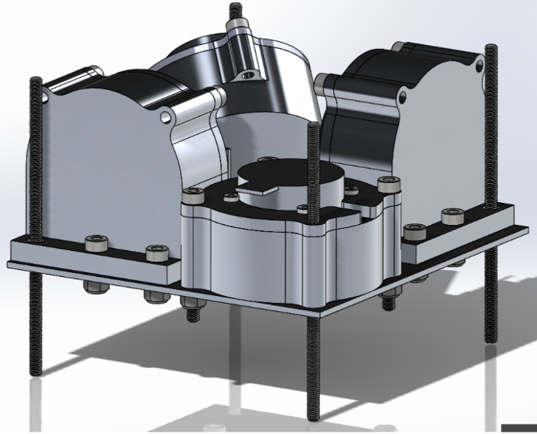
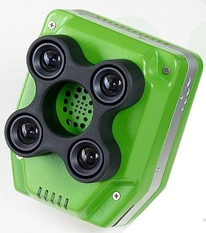
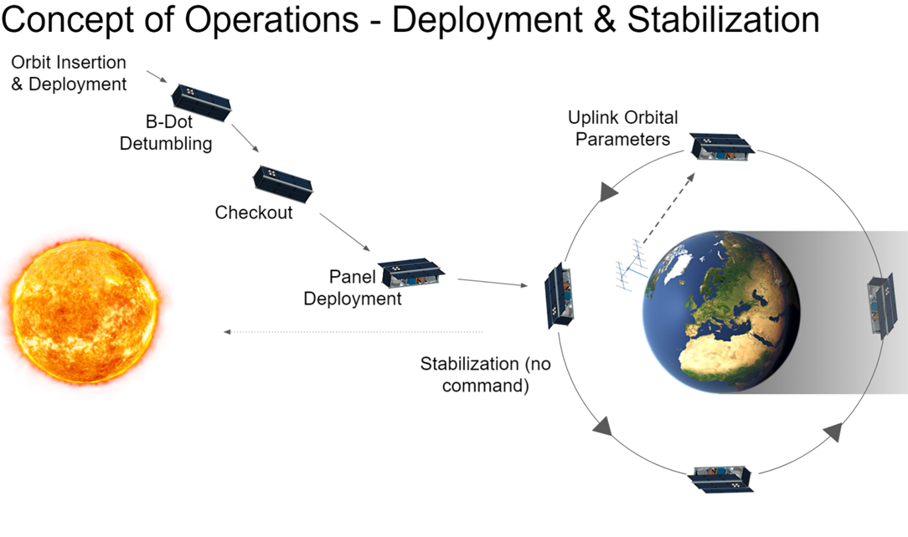
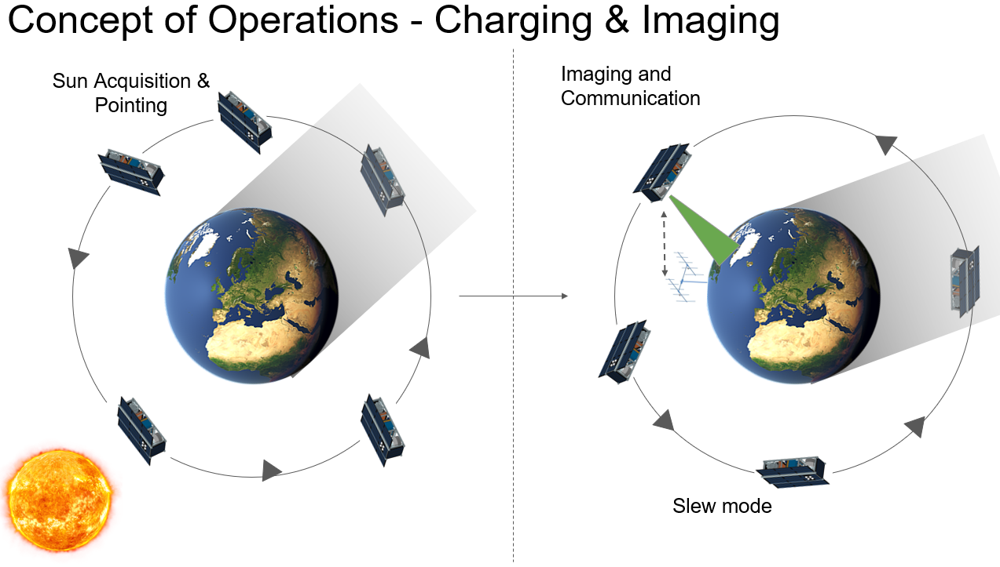

Background
A Harmful Algal Bloom, or HAB, occurs when excessive nutrients in a body of water allow a large proliferation in the number of algae, leading to severe reductions in water oxygen levels, the release of dangerous toxins, and the creation of marine dead zones.
On Lake Erie, HABs are a growing concern, due to their increasing frequency and enormous negative impact on the lake environment, human health, and the local economy.
The only reliable ways to survey and monitor HAB events are by using low-flying aircraft (which is time-consuming and expensive due to the large area involved) or by satellite.
However, currently operating satellites have complex scientific schedules which cover many priorities and have a variety of orbits, ultimately meaning that an image of Lake Erie can only be taken roughly every sixteen days.


Algal blooms on Lake Erie as seen from space (Left) and from the lake shore (Right) (images: NASA)
The purpose of HABSat-1 is to fill this gap by monitoring the development and dynamics of HABs on the Great Lakes and other bodies of water in the state of Ohio using a dedicated CubeSat.
This CubeSat will improve upon current satellite systems, by overcoming the techinical limitations of existing satellites in observing HABs and providing imaging at a higher frequency.
The main on-board sensor will be a low-cost, narrow-band multispectral imager, optimized to detect the light wavelengths found in algal blooms.
By pairing a drone-rated imager with a low-cost CubeSat, the mission will also demonstrate the viability of such sensors for space-based earth observation, providing an improvement over the temporal coverage and spatial resolution of current imaging satellites.
Summer 2025: HABSat-1 is currently being restarted after COVID hiatus!
If you are interested in the project, please reach out to Samuel Kohls (kohlssc@mail.uc.edu) for more information.
The HABSat-1 mission hardware will be a 3U CubeSat (10 cm x 10 cm x 30 cm), in which the multispectral imaging payload and its related assembly will take up 1U (10 cm x 10 cm x 10 cm) at one end of the satellite.
On board computing, communications, and attitude determination and control will take up the remainder of the satellite.

Preliminary CAD model of HABSat-1 with major components labeled
Attitude Determination & Control Subsystem
Due to the need to precisely and accurately point the satellite for imaging the Earth's surface (± 1°), HABSat-1 will have an active Attitude Determination and Control System (ADCS).
Four custom-design reaction wheels will quickly and accurately point the satellite during imaging, communication, and power collection, while magnetorquers will detumble the satellite, desaturate the reaction wheels, and make coarser attitude adjustments.
A variety of controllers will be used depending on requirements of the current operational mode, including PID, B-dot, and LQR controllers.
The satellite's attitude determination sensors will include a 3-axis Magnetometer, 3 MEM Gyroscopes, 6 Course Sun Sensors, and 2 Fine Sun/Horizon Sensors.
Data from these sensors will be fused using an Extended Kalman Filter (EKF) to provide an attitude estimate to the onboard controllers.
Due to the intense computational nature of these functions, HABSat-1 will have a dedicated ADCS flight computer.

CAD model of custom reaction wheels designed for HABSat-1
Communication Subsystem
HABSat-1 will communicate with the ground station on two frequencies.
A high-gain S-band antenna will be the satellite's main communication line with the ground, particularly for transmitting data from the payload sensors.
As this antenna is body fixed and directional, the satellite will point it towards the ground station during close orbital over-passes.
The secondary communication line is an omindirectional UHF antenna on a 70 cm band, which will primarily be used to transmit satellite health data.
Each of these antennae will have their own transmitter onboard.
Command and Data Handling Subsystem
The main computer for the satellite will be the EnduroSat OnBoard Computer (OBC), which will control the satellite's operational modes and ground communications, as well as manage data collected by the payload sensors.
This computer provides 256 kB of RAM, 2 MB of program memory, 32 GB of storage, and a real-time clock, while additionally having a large variety of interfacing options for integrating mission hardware.
Payload Subsystem
The main payload sensor for HABSat-1 will be a modified version of the the four-band Sentera Quad sensor, provided to the mission by Sentera and NASA.
In order to optimise detection of phycocyanin and chlorophyl (both found in algal blooms) the imager's four lenses will be filtered to sense the 620, 650, 680, and 710 nm wavelengths of light, with each sensing a 10 nm Full Width Half Maximum (FWHM) band about these center points.
At the satellite's likely orbital altitude of 450 km, images should cover a ground swath of roughly 86.5 x 64.8 km, with a ground sample distance of roughly 67.5 meters.

Sentera Quad multispectral imaging sensor (image: Sentera)
Power Subsystem
The three main functions of the power subsystem are to provide power generation, power storage, and power distribution.
Power is generated on HABSat-1 by a series of primary and secondary solar arrays:
-
The primary array consists of three 10 cm x 34 cm panels, two of which are attached to deployable panels.
During launch and deployment, these panels are held down to the body of the satellite by nichrome wire; after deployment, the nichrome wire is burned through, and spring loaded hinges deploy the two panels.
When deployed the primary array takes up the entire -X face of the satellite.
-
The secondary array consists of three 10 cm x 10 cm panels fixed to the +X, +Z, and -Z axes of the satellite.
These panels will help power the satellite while the primary array is not pointed at the sun, such as when performing imaging and ground communication.
Power generated by these solar panels will be stored in four 18650 Lithium Ion Batteries, with 43.2 Watt-hours of storage at 3.6V.
The batteries will be mounted to a custom-design Power Distribution Board (PDB), which contains battery chargers, a battery monitor to track battery health, and DC-DC converters to deliver the required voltage and peak/nominal current draws to each subsystem.
A variant of this power distribution board will be used on LEOPARDSat-1 as well.
Structure
HABSat-1 wil use a custom-design 3U frame made from Aluminum 6061, and consisting of top and bottom frames, two end cap frames, and four PC-104-compatable side support frames.
Internally, subsystems will be attached to this outer frame using threaded rods and standoffs in two separate "stacks":
- An Avionics Stack, containing the OBC, reaction wheels, ADCS computer, PDB, and both radio transmitters.
- An Imaging Stack, containing the multispectral imaging payload and other sensors.

Prototype of HABSat-1's structural frame.
HABSat-1 does not currently have set launch provider or timeframe, but is anticipated to be placed into an ISS-like orbit (450 km altitude, 51.6° inclination).
However, it could also be placed into a higher inclination and altitude orbit depending on the launch vehicle and its attached mission.
Mission Parameters
- Launch Vehicle: TBD
- Launch Date: TBD
- Orbital Altitude: 450 km
- Orbital Inclination: 50-140°
- Mission Duration: 12 months (minimum), 24 months (desired)
Operations
Upon deployment into orbit, HABSat-1 will begin charging its batteries, while also detumbling using its magnetorquers.
Once detumbling is complete, all onboard systems (all boards, sensors, actuators, etc.) will be checked to ensure that they are operating properly.
Immediately upon successful checkout, the satellite will deploy the two outer primary solar arrays, enter a stable attitude configuration, and begin beaconing its health status until it recieves a command from the ground station to begin nominal operations.

During nominal operations, the satellite will be either Charging by orienting its primary solar array towards the sun in order to charge its batteries up to a certain percentage (around 85% of full battery charge) or Imaging by slewing so that the imager is pointed in the Nadir (towards the ground) direction.
Once within range of Lake Erie, the multispectral imager will take images of the lake and will save them onboard to be downlinked to the S-Band ground station.
